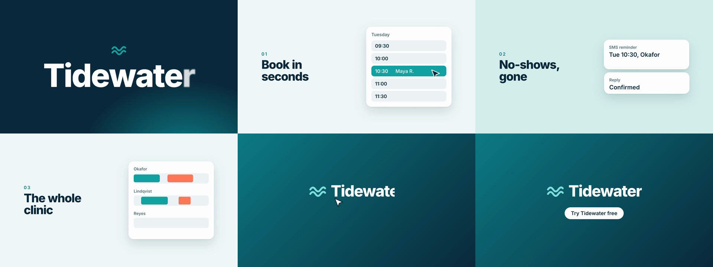

Output

Result
Delivered a real 6.0 s, 1280x720, 30 fps H.264 MP4 (340 kB) rendered by the actual HyperFrames CLI (hyperframes 0.8.185: 'npx hyperframes render', Chrome capture of a seeked GSAP timeline; the CLI installed and worked, so no manual Chrome+ffmpeg fallback was needed). Project made with 'hyperframes init' (blank example): index.html is the root composition and mounts five scene sub-compositions from compositions/ (title, booking, reminders, clinic, endcard), each with its own paused GSAP timeline registered under the same id as its host. Seams are four different transitions each caused by something on screen (iris from the logo mark, iris from the cursor click on the 10:30 slot, a horizontal whip, a colour flood), the end card performs the mark (cursor clicks, fill rises, wordmark wipes in) and ends on a real button. The end-card button label and brand colours are declared as variables. The skill's craft check (line_unread) flagged 11 lines held on screen too briefly for a 6 s film; I cut the sublines and rebalanced scene timing, which left 5 warnings that are inherent to the 6 s limit (the wordmark and closing lines are held about 1 s against the skill's 2 s floor, 'No-shows, gone' 1.00 s vs 1.05 s). The skill defaults to 1920x1080 but the prompt asks for 1280x720, so the canvas is authored at 1280x720. HYPERFRAMES_SKIP_SKILLS=1 and no telemetry were set; no voiceover, captions or music were added (the film is under 15 s).
Terminal
# Check the environment before starting
npx hyperframes doctor
✓ Version 0.8.185 (latest)
✓ Node.js v24.20.0
✓ Chrome cache: .../chrome-headless-shell/mac_arm-148.0.7778.97
✓ FFmpeg ffmpeg 7.1.1
✗ whisper-cpp / Kokoro / MusicGen (optional, not needed)
✗ Docker running (not needed)
# Skill: a new project is 'npx hyperframes init <dir>'
HYPERFRAMES_SKIP_SKILLS=1 npx hyperframes init tidewater-hf --example blank --non-interactive --resolution 1080p --skill hyperframes
(scaffolded AGENTS.md, CLAUDE.md, hyperframes.json, index.html, meta.json, package.json)
# Skill: check is the gate. First pass: 0 errors, 0 warnings, 7 info (intentional overlap of outgoing/incoming scenes during the reveal)
npx hyperframes check --json # after writing index.html + 5 scene files
"ok": true, lint errorCount 0, runtime errorCount 0, layout infoCount 7 (content_overlap at t=1.25 between title letters and booking headline, hidden under the iris reveal)
# Skill: look at frames after a passing check. Found the cursor sitting over 'Maya R.' and staying on the end-card mark; headlines at 78 px were above the 4-9% frame-height range
npx hyperframes snapshot --at 0.35,0.9,1.15,1.8,2.2,2.8,3.3,3.8,4.3,4.6,5.2,5.9
13 snapshots saved to .hyperframes/artifacts/snapshots/7e072003-.../ (contact-sheet-1.jpg, contact-sheet-2.jpg)
# Craft check now reports the real timing problem
npx hyperframes check # after moving cursor target, adding cursor exit, headlines 78 -> 64 px
⚠ line_unread: "Book in seconds" (3 words) is on screen 0.90 s, under its 1.05 s floor ... (11 warnings: title, taglines, subs, 'Maya R.', 'Tue 10:30 with Dr. Okafor', closing lines)
0 error(s), 11 warning(s)
Check passed
# Scene hosts now start at 0 / 0.8 / 2.0 / 3.2 / 4.4 s so each headline holds at least ~1 s
(edit) remove sublines + tagline, shorten SMS text, retime scene hosts, then npx hyperframes check
⚠ line_unread: "No-shows, gone" (3 words) is on screen 1.00 s (±0.01 s), under its 1.05 s floor
⚠ line_unread: The film's last line "Tidewater" (1 word) is on screen 1.07 s, under the 2.00 s a closing line needs
⚠ line_unread: ... "Try Tidewater free" is on screen 0.86 s, under the 2.00 s ...
(+2 more)
0 error(s), 5 warning(s), 0 info(s)
Check passed
# Re-look at every beat and seam; layout, iris, whip and flood all read correctly
npx hyperframes snapshot --at 0.5,0.95,1.5,2.4,3.0,3.45,4.0,4.55,4.85,5.3,5.95
11 snapshots saved (contact-sheet-1.jpg, contact-sheet-2.jpg)
# Skill: open the Studio preview before the delivery render (it served; the in-app browser was not opened)
npx hyperframes preview --background --port 7153 ; curl -s -o /dev/null -w '%{http_code}' localhost:7153 ; npx hyperframes preview --stop
Server http://localhost:7153
Running in the background.
200
Stopped background preview
# Delivery render through the CLI
npx hyperframes render -o renders/video-1.mp4 --skill hyperframes
◇ renders/video-1.mp4
339.4 KB · 6.0s video · rendered in 2m 18.9s
screenshot capture · hardware gpu · ... capture 2m 4.6s · encode 0.1s
# Verify spec; then pulled frames from the MP4 itself with ffmpeg to confirm the render matches the snapshots
ffprobe -v error -show_entries stream=codec_name,width,height,r_frame_rate,duration -of default=nw=1 renders/video-1.mp4
codec_name=h264
width=1280
height=720
r_frame_rate=30/1
duration=6.000000
Files
index.html
<!doctype html> <html lang=class="s">"en" data-resolution=class="s">"landscape" data-composition-variables='[ {class="s">"id":class="s">"cta",class="s">"type":class="s">"string",class="s">"label":class="s">"End-card button",class="s">"default":class="s">"Try Tidewater free",class="s">"maxLength":28}, {class="s">"id":class="s">"navy",class="s">"type":class="s">"color",class="s">"label":class="s">"Ink / dark ground",class="s">"default":class="s">"#0B2A3C"}, {class="s">"id":class="s">"teal",class="s">"type":class="s">"color",class="s">"label":class="s">"Brand teal",class="s">"default":class="s">"#12A3A3"}, {class="s">"id":class="s">"coral",class="s">"type":class="s">"color",class="s">"label":class="s">"Accent",class="s">"default":class="s">"#FF7A59"} ]' > <head> <meta charset=class="s">"UTF-8" /> <meta name=class="s">"viewport" content=class="s">"width=1280, height=720" /> <script src=class="s">"https://cdn.jsdelivr.net/npm/gsap@3.14.2/dist/gsap.min.js"></script> <style> :root { --navy: #0b2a3c; --teal: #12a3a3; --teal-dark: #0e7c86; --mist: #f2f8f8; --mint: #d6eeee; --muted: #52707e; --coral: #ff7a59; --font-display: class="s">"Inter", sans-serif; } * { margin: 0; padding: 0; box-sizing: border-box; } html, body { width: 1280px; height: 720px; overflow: hidden; background: var(--navy); } </style> </head> <body> <div data-hf-id=class="s">"hf-2yit" id=class="s">"root" data-composition-id=class="s">"main" data-start=class="s">"0" data-duration=class="s">"6" data-width=class="s">"1280" data-height=class="s">"720"> <div data-hf-id=class="s">"hf-0jc4" id=class="s">"title" data-composition-id=class="s">"title" data-composition-src=class="s">"compositions/title.html" data-start=class="s">"0" data-duration=class="s">"1.1" data-track-index=class="s">"1" data-track-kind=class="s">"graphics" data-width=class="s">"1280" data-height=class="s">"720"></div> <div data-hf-id=class="s">"hf-t36i" id=class="s">"booking" data-composition-id=class="s">"booking" data-composition-src=class="s">"compositions/booking.html" data-start=class="s">"0.8" data-duration=class="s">"1.5" data-track-index=class="s">"2" data-track-kind=class="s">"graphics" data-width=class="s">"1280" data-height=class="s">"720"></div> <div data-hf-id=class="s">"hf-iuyp" id=class="s">"reminders" data-composition-id=class="s">"reminders" data-composition-src=class="s">"compositions/reminders.html" data-start=class="s">"2.0" data-duration=class="s">"1.5" data-track-index=class="s">"3" data-track-kind=class="s">"graphics" data-width=class="s">"1280" data-height=class="s">"720"></div> <div data-hf-id=class="s">"hf-0f40" id=class="s">"clinic" data-composition-id=class="s">"clinic" data-composition-src=class="s">"compositions/clinic.html" data-start=class="s">"3.2" data-duration=class="s">"1.5" data-track-index=class="s">"4" data-track-kind=class="s">"graphics" data-width=class="s">"1280" data-height=class="s">"720"></div> <div data-hf-id=class="s">"hf-v7fe" id=class="s">"endcard" data-composition-id=class="s">"endcard" data-composition-src=class="s">"compositions/endcard.html" data-start=class="s">"4.4" data-duration=class="s">"1.6" data-track-index=class="s">"5" data-track-kind=class="s">"graphics" data-width=class="s">"1280" data-height=class="s">"720"></div> </div> <script> window.__timelines = window.__timelines || {}; window.__timelines[class="s">"main"] = gsap.timeline({ paused: true }); </script> </body> </html>
compositions/booking.html
<template> <style> #root { position: absolute; inset: 0; font-family: "Inter", sans-serif; color: #0b2a3c; } #booking-wrap { position: absolute; inset: 0; background: #f2f8f8; } #booking-copy { position: absolute; left: 128px; top: 0; bottom: 0; width: 470px; display: flex; flex-direction: column; justify-content: center; } #booking-idx { font-size: 24px; font-weight: 600; letter-spacing: 4px; color: #0e7c86; } #booking-h { font-size: 64px; font-weight: 800; letter-spacing: -2.5px; line-height: 1; margin-top: 10px; } #booking-h span { display: inline-block; margin-right: 0.22em; } #booking-sub { font-size: 30px; font-weight: 500; color: #52707e; margin-top: 18px; } #booking-card { position: absolute; left: 692px; top: 144px; width: 460px; height: 432px; padding: 28px; background: #fff; border-radius: 28px; box-shadow: 0 24px 60px rgba(11,42,60,.16), 0 2px 6px rgba(11,42,60,.08); } #booking-day { height: 46px; font-size: 24px; font-weight: 600; color: #52707e; } .bk-slot { position: relative; height: 58px; margin-bottom: 10px; border-radius: 16px; background: #eef4f5; font-size: 26px; font-weight: 600; display: flex; align-items: center; padding: 0 20px; } .bk-slot b { width: 110px; font-weight: 600; } #bk-fill { position: absolute; inset: 0; border-radius: 16px; background: #12a3a3; } #bk-time, #bk-name { position: relative; } #bk-name { color: #fff; font-weight: 500; } #bk-time { width: 110px; } #booking-cursor { position: absolute; left: 0; top: 0; width: 56px; height: 56px; } </style> <div data-hf-id=class="s">"hf-gqsr" id=class="s">"root" data-composition-id=class="s">"booking" data-width=class="s">"1280" data-height=class="s">"720"> <div data-hf-id=class="s">"hf-kj6r" id=class="s">"booking-wrap"> <div data-hf-id=class="s">"hf-rfxs" id=class="s">"booking-copy"> <div data-hf-id=class="s">"hf-olfr" id=class="s">"booking-idx">01</div> <h2 data-hf-id=class="s">"hf-bkre" id=class="s">"booking-h"><span data-hf-id=class="s">"hf-7mes">Book</span><span data-hf-id=class="s">"hf-ftaa">in</span><br data-hf-id=class="s">"hf-x5px" /><span data-hf-id=class="s">"hf-2wtq">seconds</span></h2> </div> <div data-hf-id=class="s">"hf-37sx" id=class="s">"booking-card"> <div data-hf-id=class="s">"hf-b506" id=class="s">"booking-day">Tuesday</div> <div data-hf-id=class="s">"hf-j95y" class=class="s">"bk-slot"><b data-hf-id=class="s">"hf-brhf">09:30</b></div> <div data-hf-id=class="s">"hf-snfu" class=class="s">"bk-slot"><b data-hf-id=class="s">"hf-u3pm">10:00</b></div> <div data-hf-id=class="s">"hf-t1qv" class=class="s">"bk-slot"><div data-hf-id=class="s">"hf-qka6" id=class="s">"bk-fill"></div><span data-hf-id=class="s">"hf-hju6" id=class="s">"bk-time" style=class="s">"color:#0b2a3c">10:30</span><span data-hf-id=class="s">"hf-kfsz" id=class="s">"bk-name">Maya R.</span></div> <div data-hf-id=class="s">"hf-tg1w" class=class="s">"bk-slot"><b data-hf-id=class="s">"hf-mar3">11:00</b></div> <div data-hf-id=class="s">"hf-tucx" class=class="s">"bk-slot"><b data-hf-id=class="s">"hf-q75g">11:30</b></div> </div> <svg data-hf-id=class="s">"hf-jz2r" id=class="s">"booking-cursor" viewBox=class="s">"0 0 24 24"><path data-hf-id=class="s">"hf-ejno" d=class="s">"M2 2l7.5 19 2.8-8 8-2.8z" fill=class="s">"#0b2a3c" stroke=class="s">"#fff" stroke-width=class="s">"1.6" stroke-linejoin=class="s">"round" /></svg> </div> </div> <script> const tl = gsap.timeline({ paused: true }); // reveal: iris from the title's mark tl.fromTo(class="s">"#booking-wrap", { clipPath: class="s">"circle(0px at 640px 250px)" }, { clipPath: class="s">"circle(1300px at 640px 250px)", duration: 0.3, ease: class="s">"power2.inOut" }, 0); // copy: per word blur-in, 0.07 s apart tl.fromTo(class="s">"#booking-idx", { opacity: 0 }, { opacity: 1, duration: 0.15 }, 0.12); tl.fromTo(class="s">"#booking-h span", { opacity: 0, filter: class="s">"blur(8px)" }, { opacity: 1, filter: class="s">"blur(0px)", duration: 0.14, ease: class="s">"power3.out", stagger: 0.07 }, 0.12); // card: blur swap on the stage, lands dead still tl.fromTo(class="s">"#booking-card", { opacity: 0, filter: class="s">"blur(10px)" }, { opacity: 1, filter: class="s">"blur(0px)", duration: 0.2, ease: class="s">"power3.out" }, 0.18); // fill slot: hidden until the click, then caused by it on the same frame tl.fromTo(class="s">"#bk-fill", { opacity: 0 }, { opacity: 1, duration: 0.08, ease: class="s">"none" }, 0.56); tl.fromTo(class="s">"#bk-time", { color: class="s">"#0b2a3c" }, { color: class="s">"#ffffff", duration: 0.08, ease: class="s">"none" }, 0.56); tl.fromTo(class="s">"#bk-name", { opacity: 0 }, { opacity: 1, duration: 0.12, ease: class="s">"power2.out" }, 0.58); // cursor: enters from off-screen right/bottom, arrives on the slot, clicks (small press), holds tl.fromTo(class="s">"#booking-cursor", { x: 1300, y: 760 }, { x: 1040, y: 372, duration: 0.36, ease: class="s">"power3.out" }, 0.18); tl.fromTo(class="s">"#booking-cursor", { scale: 1 }, { scale: 0.86, duration: 0.05, ease: class="s">"power2.in", transformOrigin: class="s">"0 0" }, 0.54); tl.to(class="s">"#booking-cursor", { scale: 1, duration: 0.1, ease: class="s">"power2.out", transformOrigin: class="s">"0 0" }, 0.59); window.__timelines[class="s">"booking"] = tl; </script> </template>
compositions/endcard.html
<template> <style> #root { position: absolute; inset: 0; font-family: "Inter", sans-serif; color: #fff; } #end-wrap { position: absolute; inset: 0; background: linear-gradient(135deg, #0e7c86, #0b2a3c); } #end-lockup { position: absolute; left: 0; right: 0; top: 262px; display: flex; flex-direction: column; align-items: center; } #end-row { display: flex; align-items: center; gap: 22px; height: 96px; } #end-mark { position: relative; width: 96px; height: 96px; } #end-mark svg { position: absolute; inset: 0; width: 96px; height: 96px; } #end-fillmark { clip-path: inset(100% 0 0 0); } #end-word { font-size: 84px; font-weight: 800; letter-spacing: -3px; line-height: 96px; } #end-cta { margin-top: 40px; height: 64px; padding: 0 34px; border-radius: 32px; background: #fff; color: #0b2a3c; font-size: 28px; font-weight: 600; display: flex; align-items: center; } #end-cursor { position: absolute; left: 0; top: 0; width: 56px; height: 56px; } </style> <div data-hf-id=class="s">"hf-dniz" id=class="s">"root" data-composition-id=class="s">"endcard" data-width=class="s">"1280" data-height=class="s">"720"> <div data-hf-id=class="s">"hf-veax" id=class="s">"end-wrap"> <div data-hf-id=class="s">"hf-u2tv" id=class="s">"end-lockup"> <div data-hf-id=class="s">"hf-4zhn" id=class="s">"end-row"> <div data-hf-id=class="s">"hf-d956" id=class="s">"end-mark"> <svg data-hf-id=class="s">"hf-h071" viewBox=class="s">"0 0 48 48" fill=class="s">"none"><path data-hf-id=class="s">"hf-e97v" d=class="s">"M4 20c5-7 9-7 14 0s9 7 14 0 9-7 12-3M4 32c5-7 9-7 14 0s9 7 14 0 9-7 12-3" stroke=class="s">"#ffffff" stroke-opacity=class="s">".28" stroke-width=class="s">"5" stroke-linecap=class="s">"round" /></svg> <svg data-hf-id=class="s">"hf-q7s7" id=class="s">"end-fillmark" viewBox=class="s">"0 0 48 48" fill=class="s">"none"><path data-hf-id=class="s">"hf-gc9d" d=class="s">"M4 20c5-7 9-7 14 0s9 7 14 0 9-7 12-3M4 32c5-7 9-7 14 0s9 7 14 0 9-7 12-3" stroke=class="s">"#7fe0e0" stroke-width=class="s">"5" stroke-linecap=class="s">"round" /></svg> </div> <div data-hf-id=class="s">"hf-0byk" id=class="s">"end-word">Tidewater</div> </div> <div data-hf-id=class="s">"hf-qh1e" id=class="s">"end-cta" data-var-text=class="s">"cta">Try Tidewater free</div> </div> <svg data-hf-id=class="s">"hf-f8ol" id=class="s">"end-cursor" viewBox=class="s">"0 0 24 24"><path data-hf-id=class="s">"hf-35ni" d=class="s">"M2 2l7.5 19 2.8-8 8-2.8z" fill=class="s">"#ffffff" stroke=class="s">"#0b2a3c" stroke-width=class="s">"1.6" stroke-linejoin=class="s">"round" /></svg> </div> </div> <script> const tl = gsap.timeline({ paused: true }); // reveal: colour flood rising from the bottom tl.fromTo(class="s">"#end-wrap", { clipPath: class="s">"inset(100% 0% 0% 0%)" }, { clipPath: class="s">"inset(0% 0% 0% 0%)", duration: 0.3, ease: class="s">"power2.inOut" }, 0); // mark is performed: cursor clicks it, a fill rises through it tl.fromTo(class="s">"#end-cursor", { x: 1300, y: 780 }, { x: 436, y: 300, duration: 0.26, ease: class="s">"power3.out" }, 0.05); tl.fromTo(class="s">"#end-cursor", { scale: 1 }, { scale: 0.86, duration: 0.05, ease: class="s">"power2.in", transformOrigin: class="s">"0 0" }, 0.32); tl.to(class="s">"#end-cursor", { scale: 1, duration: 0.1, ease: class="s">"power2.out", transformOrigin: class="s">"0 0" }, 0.37); // cursor leaves cleanly once it has clicked (exit shorter than entrance) tl.to(class="s">"#end-cursor", { x: 1300, y: 780, duration: 0.18, ease: class="s">"power3.in" }, 0.5); tl.fromTo(class="s">"#end-fillmark", { clipPath: class="s">"inset(100% 0% 0% 0%)" }, { clipPath: class="s">"inset(0% 0% 0% 0%)", duration: 0.22, ease: class="s">"power2.inOut" }, 0.32); // wordmark wipes in beside it tl.fromTo(class="s">"#end-word", { clipPath: class="s">"inset(0% 100% 0% 0%)", opacity: 1 }, { clipPath: class="s">"inset(0% 0% 0% 0%)", duration: 0.25, ease: class="s">"power3.out" }, 0.5); // call to action, a real button, lands and holds tl.fromTo(class="s">"#end-cta", { opacity: 0, filter: class="s">"blur(8px)" }, { opacity: 1, filter: class="s">"blur(0px)", duration: 0.15, ease: class="s">"power3.out" }, 0.7); window.__timelines[class="s">"endcard"] = tl; </script> </template>
compositions/title.html
<template> <style> #root { position: absolute; inset: 0; background: radial-gradient(760px 520px at 78% 112%, #0e7c86 0%, #0b2a3c 72%); font-family: "Inter", sans-serif; color: #fff; } #title-stage { position: absolute; inset: 0; display: flex; flex-direction: column; align-items: center; justify-content: center; } #title-mark { width: 84px; height: 84px; } #title-word { font-size: 172px; font-weight: 800; letter-spacing: -6px; line-height: 1; margin-top: 8px; white-space: nowrap; } #title-word span { display: inline-block; } </style> <div data-hf-id=class="s">"hf-7zk0" id=class="s">"root" data-composition-id=class="s">"title" data-width=class="s">"1280" data-height=class="s">"720"> <div data-hf-id=class="s">"hf-62u0" id=class="s">"title-stage"> <svg data-hf-id=class="s">"hf-26dj" id=class="s">"title-mark" viewBox=class="s">"0 0 48 48" fill=class="s">"none"> <path data-hf-id=class="s">"hf-4lyj" d=class="s">"M4 20c5-7 9-7 14 0s9 7 14 0 9-7 12-3M4 32c5-7 9-7 14 0s9 7 14 0 9-7 12-3" stroke=class="s">"#12A3A3" stroke-width=class="s">"5" stroke-linecap=class="s">"round" /> </svg> <h1 data-hf-id=class="s">"hf-6gco" id=class="s">"title-word"><span data-hf-id=class="s">"hf-efqn">T</span><span data-hf-id=class="s">"hf-wbiw">i</span><span data-hf-id=class="s">"hf-xifz">d</span><span data-hf-id=class="s">"hf-xwr0">e</span><span data-hf-id=class="s">"hf-qr8i">w</span><span data-hf-id=class="s">"hf-zhz4">a</span><span data-hf-id=class="s">"hf-r5jj">t</span><span data-hf-id=class="s">"hf-pn38">e</span><span data-hf-id=class="s">"hf-ry5l">r</span></h1> </div> </div> <script> const tl = gsap.timeline({ paused: true }); // mark: scale in on a long tail tl.fromTo(class="s">"#title-mark", { opacity: 0, scale: 0.6 }, { opacity: 1, scale: 1, duration: 0.4, ease: class="s">"expo.out" }, 0.0); // name: per letter, 0.05 s apart, opacity .3 -> 1 with slight blur, no position change tl.fromTo(class="s">"#title-word span", { opacity: 0.3, filter: class="s">"blur(10px)" }, { opacity: 1, filter: class="s">"blur(0px)", duration: 0.16, ease: class="s">"power4.out", stagger: 0.045 }, 0.1); window.__timelines[class="s">"title"] = tl; </script> </template>